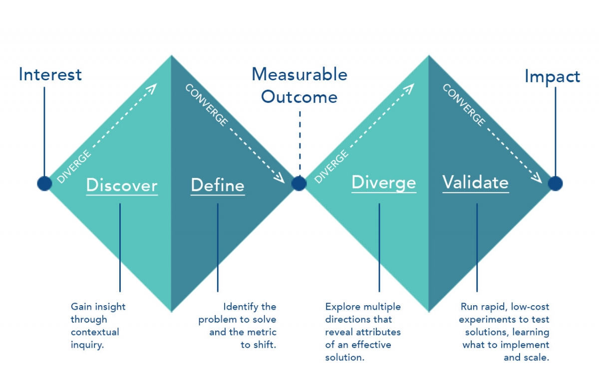

How can we optimize the shopping experience and make it efficient and effective?
There are moments when you walk in a store and you are overwhelmed by the amount of products and information. You enter with no idea whether they have clothes you want, and you don't know where or how to start. Sometimes you spend hours in a store, trying on a lot of pieces and you can't find one that fits you perfectly.
Vuno is your solution to problems like these. Vuno recreates your shopping experience using Augmented Reality with assistance from AI.
Redesign Individual Project - 4 Weeks
My Role: Interaction Design, User Testing, Prototyping, Logic Flow
Keywords: Augmented Reality, Voice Commands, AI
Tools: Unity, Vuforia, After Effects, Principle, Sketch
Vuno is an artificial intelligence powered assistance that utilizes Augmented Reality to assist individuals in their shopping experience to make both store navigation and garment selection processes effortlessly and effectively. Vuno implements conversational UI to help users set their shopping goals. Vuno extracts users' physical information such as body measurements in BWH, height, weight, shopping budget and find target stores and clothes that satisfy users' pre-set shopping goals. Vuno utilizes AR to forge an engaging shopping experience for shoppers to filter and absorb information with ease and efficiency.
"How can we enhance the current shopping experience?" In order to answer the question, I decided to conduct Contextual Inquiry research method followed by Semi-Structured Interview to take close observations on users' behavior during their shopping process.

After receiving consent from the stores and customers, I started observing users' behaviors and recording when new events are triggered. I made note on the time they spent on each task, such as "picking clothes on the same hanger", "walking around", "getting help from salespeople", and "trying on in fitting room".
"How can we enhance the current shopping experience?" In order to answer the question, I decided to conduct Contextual Inquiry research method followed by Semi-Structured Interview to take close observations on users' behavior during their shopping process.
while no research subjects are completely alike, one common result I found was that most customers spent around 60-85% of their time picking and choosing the clothes they want or trying on in the fitting room. Some of the users left the store when the pieces they brought in the fitting room didn't suite well.

Since we are redesigning the whole interaction of users with their shopping experience, we have broken down the project into sixß parts: Find a shopping district, Find a store, Glance through the store, Find products, Try on products (repeat previous step if needed) and Check out.
`Our Project shows user what the permissions are used for and who are the data being sent to.
We want to make all the privacy data permissions transparent, help users configure the best privacy setting base on their preference, and at the same time, make the interaction as simple as possible under data complexity. The detailed goals for each of the five sections are listed above.
My design process for Privacy Manager breaks down into seven steps: Heuristic Evaluation, User Research, User Interview/Card Sorting, Sketching & Wireframing, Medium Fidelity Design, and Usability Testing. After several rounds of iterations, I finalize on the design and make it high fidelity.
I start from understanding the problem to Heuristic Evaluation on the current design. Then I dive into User Research where I could understand what users need and their pain points. After User Research, I conduct User Interview with potential users in different demographic groups to further get into users heads, so the products could better serve users’ needs.


For next step design, pen and paper are my best companies. I pulled out sticky notes and wrote down problems and opportunity identified, and then started sketching. There were many ideas that came out in my head, eventually I filtered down to these core features.


Through Vuno, user can use Voice Commands to trigger the AR interface and activate their AR shopping experience. Vuno receives commands and extracts users' registered information using Artificial Intelligence to search for surrounding areas and find the stores that suit users' needs.
Based on users' body measurements, shopping habits, and spending budget, Vuno lists out some of the most relevant information for users such as price range, available discounts, clothes sizes, new collection arrive date, and store's opening hours. Vuno provides color based recommendation systems.


Vuno provides a shopping category list interface after user enters the store. User can use voice commands to set his or her target goal, for example the category he or she wants to shop in. After Vuno receives the command, it will process the data and start loading information for the user.
Vuno matches users needs with current inventory in store based on users’ shopping goals. Vuno identifies inventories that match with users' body measurements through guidance from animated butterflies. Vuno accelerates users' information processing progress by further provides information such as size, price, and new collection to the end-users at a glance.


For the users who don't have time and enjoy the ease of shopping at home or the disabled individuals who might encounter difficulties coming in store, Vuno provides the convenience by bringing AR shopping experience whenever and wherever. User can choose to flip through stores fashion magazines and see recommended clothes for them in Augmented Reality models. By simply opening up Vuno, user will see live clothing models with their reactive personal avatar.